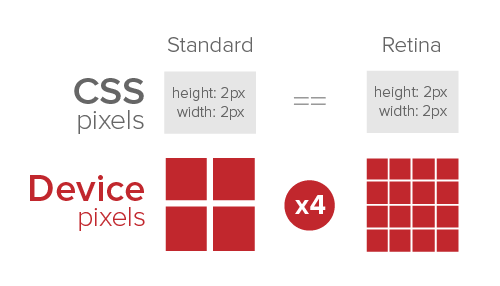

O singură imagine pentru toate rezoluțiile de ecran și diferite dispozitive nu este suficient. O imagine pe pixel este prea mult - deci cum poate cineva alegeți automat dimensiunile optime ale imaginii receptive?
Densitate pixeli = Pixeli CSS / Pixeli hardware ex. 2048 / 1024 = 2x
Luați un iPad de 9,7 inchi care are o rezoluție de ecran de 1024 pe 768 pixeli, dar de fapt cu rezoluția retinei de 2048 pe 1536 pixeli. Prin urmare, rezoluția hardware de 2048 pixeli se traduce în 1024 pixeli CSS pe ecranul retină. Este posibil să întâmpinați imagini neclare pe site-urile web receptive comparând versiunile desktop și retina, deoarece le veți vedea ca având o lățime de numai 1024 pixeli în loc de 2048 pixeli inițiali de pe iPad Air. Deci, aveți nevoie de mai multe imagini pentru a satisface toate rezoluțiile diferite.
